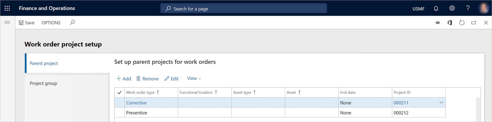
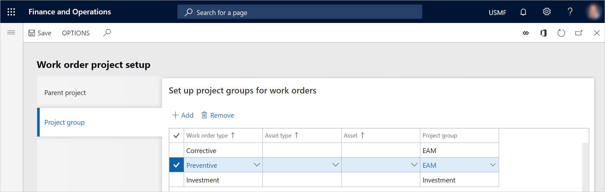

Arbeitsauftrags-Projekteinstellungen
Important
Dynamics 365 for Finance and Operations hat sich zu speziell entwickelten Anwendungen entwickelt, mit denen Sie bestimmte Geschäftsfunktionen verwalten können. Weitere Informationen zu diesen Änderungen finden Sie im Dynamics 365-Lizenzierungshandbuch.
Im Modul Anlagenmanagement ist für jeden Arbeitsauftrag eine Projektbeziehung erforderlich. Mit dem Projekt, das mit einem Arbeitsauftrag verbunden ist, können Sie die Kosten für verschiedene Projekte im Zusammenhang mit dem Asset Management verfolgen, wie z.B. interne Instandhaltungsprojekte, Servicemanagementprojekte und Investitionsprojekte.
Projekteinrichtung für einen Arbeitsauftrag
Wenn Sie einen Arbeitsauftrag auf einem Arbeitsauftrag anlegen, bestimmen die Projekteinstellung im Modul Projektverwaltung und Abrechnung und die Arbeitsauftragsprojekteinstellung im Modul Anlagenmanagement, wie Projekte zur Kostenkontrolle auf der Anlage verwendet werden können, die auf diesem Arbeitsauftrag ausgewählt wird. Dieser Abschnitt beschreibt die folgenden Teile der Projektaufstellung, die für einen Arbeitsauftrag verwendet werden: das übergeordnete Projekt (Projekt-ID), den Projekttyp, die Projektaktivitäten und die finanziellen Aspekte:
Wenn Sie einen Arbeitsauftrag auf einem Arbeitsauftrag anlegen, wird automatisch eine eindeutige Projekt-ID und eine zugehörige Projektaktivität für ihn angelegt. Wenn jedoch mehrere Arbeitsaufträge auf einem Arbeitsauftrag die gleiche Anlage enthalten, wird für sie die gleiche Projekt-ID verwendet. Das heißt, für jede Anlage eines Arbeitsauftrags wird eine Projekt-ID angelegt.
- Das übergeordnete Projekt (Projekt-ID) für einen Arbeitsauftrag befindet sich in der übergeordneten Projekteinrichtung. (Weitere Informationen zur Einrichtung des übergeordneten Projekts finden Sie im nächsten Abschnitt.) Wenn Sie beispielsweise einen Kunden oder einen technischen Standort einem bestimmten übergeordneten Projekt zuordnen, wird das übergeordnete Projekt jedes Mal verwendet, wenn Sie Arbeitsaufträge für diesen Kunden oder diesen technischen Standort anlegen. Wenn Sie eine bestimmte Projekt-ID nicht z.B. mit einem Technischen Standort verknüpfen, wird das nächst relevante übergeordnete Projekt in der Projektauftragseinrichtung verwendet.
- Für jede Projekt-ID wird ein Projekttyp benötigt. Der Projekttyp befindet sich im Setup des Projektgruppen-Setups. (Weitere Informationen zur Einrichtung der Projektgruppe finden Sie im nächsten Abschnitt.) Wenn bei der Einrichtung der Projektgruppe keine Übereinstimmung gefunden wird, wird die Einrichtung der Projektgruppe auf dem übergeordneten Projekt verwendet.
- Die Einrichtung für die Anforderung von Projektaktivitäten auf Prognosen und Erfassungen wird aus dem übergeordneten Projekt in das Arbeitsauftragsprojekt kopiert. Wenn die Optionen Stunde, Aufwand und Artikel für das Projekt, das als übergeordnetes Projekt verwendet wird, auf Ja gesetzt sind, ist eine Projektaktivität für Prognosen und Zeitschriften obligatorisch. (Um auf diese Optionen zuzugreifen, wählen Sie Projektverwaltung und Abrechnung > Projekte > Alle Projekte, und wählen Sie dann das Projekt, das als übergeordnetes Projekt verwendet wird. Die Optionen befinden sich im Abschnitt Aktivität für Erfassungen erforderlich auf der Seite Einrichtung FastTab.)
Finanzielle Dimensionen werden aus der Anlage kopiert und mit dem übergeordneten Projekt zusammengeführt.
Im nächsten Abschnitt wird erläutert, wie Sie übergeordnete Projekte und Projektgruppen einrichten. Übergeordnete Projekt- und übergeordnete Gruppen werden zur Steuerung von Arbeitsaufträgen verwendet. Sie werden auch für die Berichterstattung über Arbeitsaufträge verwendet.
Einrichten von Arbeitsauftragsprojekten
Bevor Sie mit der Erstellung von Arbeitsaufträgen beginnen, müssen Sie Arbeitsauftragsprojekte einrichten. Die Seite Auftragsprojektaufbau (Anlagenmanagement > Aufbau > Aufträge > Projektaufbau) enthält zwei Registerkarten: Übergeordnetes Projekt und Projektgruppe.
Auf der Registerkarte Übergeordnetes Projekt können Sie Projektbeziehungen einrichten, die verwendet werden können, wenn kein Projekt auf der Anlage eingerichtet ist, die im Arbeitsauftrag ausgewählt ist. Eine übergeordnete Projektaufstellung ist nicht erforderlich, wenn Ihr Unternehmen Anlagenprojekte verwendet. Dies ist nur relevant, wenn Sie Arbeitsauftragsprojekte anstelle von Anlagenprojekten verwenden möchten. In diesem Fall müssen Sie mindestens ein übergeordnetes Projekt einrichten.
Auf der Registerkarte Projektgruppe können Sie Projektgruppen einrichten, die mit Arbeitsauftragsarten, Anlagentypen und Anlagen verknüpft werden können.
Projektgruppen können verwendet werden, um bestimmte Kategorien (Gruppen) anzulegen, die für die Kostenkontrolle verwendet werden. Durch das Anlegen von Projektgruppen für bestimmte Anlagentypen oder Arbeitsauftragsarten können Sie beispielsweise eine detaillierte Verfolgung der Instandhaltungskosten nach Typen durchführen.
Projektgruppen sind nicht obligatorisch. Wenn Sie keine Projektgruppen einrichten, wird das übergeordnete Projekt zur Bestimmung der Projektgruppe verwendet, und ein untergeordnetes Projekt wird aus der Projektgruppe des übergeordneten Projekts erstellt.
Das Setup ermöglicht eine vollständige Integration mit dem Modul Projektmanagement und Abrechnung. Daher können Sie die Kosten, die sich auf Arbeitsaufträge in den zugehörigen Projekten beziehen, verfolgen. Die folgende Vorgehensweise beschreibt die Einrichtung für Arbeitsauftragsprojekte.
Wählen Sie Anlagenmanagement > Einrichtung > Aufträge > Projekteinrichtung.
Wählen Sie auf der Registerkarte Übergeordnetes Projekt Hinzufügen.
Wählen Sie in den Feldern Auftragsart, Technischer Standort, Anlagenart und Anlage Werte nach Ihren Wünschen aus. Für jede Zeile, die Sie hinzufügen, können Sie nur ein Feld oder mehrere Felder festlegen. Die Anzahl der Felder, die Sie einstellen, bestimmt die Kombination, die bei der Auswahl einer Projekt-ID im Anlagenmanagement verwendet wird.
Wenn Sie einen technischen Standort auswählen, werden die zugehörigen Unterplätze automatisch berücksichtigt. Wenn Sie eine Anlage auswählen, können Sie weitere Projektauftragszeilen für dieselbe Anlage anlegen, aber Sie können verschiedene Projekte für diese Anlage auswählen.
Wählen Sie im Feld Projekt-ID das Projekt aus, das sich auf das Setup beziehen soll, das Sie in Schritt 3 erstellt haben.
Wenn die Projekteinrichtung nur für einen begrenzten Zeitraum gültig sein soll, wählen Sie im Feld Enddatum ein Enddatum aus. Andernfalls wählen Sie Keine.
Standardmäßig ist das Startdatum das Datum, an dem Sie das Arbeitsauftragsprojekt zur Seite hinzufügen. Es wird durch das Feld Gültig von gesteuert, das standardmäßig ausgeblendet ist. Um das Feld Gültig von anzuzeigen, wählen Sie Ansicht > Alle. Sie können dann das Feld Gültig ab zusammen mit dem Feld Enddatum verwenden, um eine begrenzte Gültigkeitsdauer für das Arbeitsauftragsprojekt festzulegen.

Wählen Sie auf der Registerkarte Projektgruppe Hinzufügen.
Wählen Sie im Feld Arbeitsauftragstyp einen Arbeitsauftragstyp aus.
Wenn Sie eine spezifischere Zuordnung der Projektgruppe wünschen, wählen Sie eine Anlagenart im Feld Anlagenart oder eine Anlage im Feld Anlage.
Wählen Sie im Feld Projektgruppe die Projektgruppe aus, die mit der Arbeitsauftragsart verknüpft sein soll. So könnte beispielsweise eine Arbeitsauftragsart mit dem Namen Preventive Instandhaltung einer Projektgruppe mit dem Namen Prev Inst oder Intern zugeordnet sein. Alternativ kann eine Investition Arbeitsauftragsart, die für Arbeitsaufträge verwendet wird, die sich auf Investitionen und Anlagen beziehen, einer Projektgruppe zugeordnet werden, die den Namen Invest oder Investition trägt.
Wählen Sie Speichern.

Note
Jedes Mal, wenn eine Arbeitsauftragszeile erstellt wird, sucht das Asset Management nach einer Projektgruppe, die mit dem Arbeitsauftragsprojekt verknüpft sein soll. Die Suche basiert auf dem Setup, das in diesem Thema beschrieben wird. Jede Projektgruppe hat einen zugehörigen Projekttyp. Projektgruppen mit der Projektart Zeit und Material oder Festpreis sind nur für Anlagen gültig, die sich auf ein Kundenkonto beziehen.
Wenn das System bei übergeordneten Projekten und Projektgruppen das verfügbare Arbeitsauftragsprojekt oder die Projektgruppe auswählt, basiert die Auswahl auf den Datensätzen, die Sie mit der vorherigen Vorgehensweise angelegt haben. Das Anlagenmanagement durchläuft Datensätze, die sich auf das Arbeitsauftragsprojekt beziehen, um nach einer möglichen Übereinstimmung zu suchen. Die spezifischste Kombination wird immer zuerst geprüft. Mit anderen Worten, für das übergeordnete Projekt des Arbeitsauftrags prüft das Anlagenmanagement zunächst, ob eine mögliche Übereinstimmung für das Feld Anlage vorliegt. Wenn keine Übereinstimmung gefunden wird, wird nach einer Übereinstimmung für das Feld Anlagentyp gesucht. Wenn keine Übereinstimmung gefunden wird, wird nach einer Übereinstimmung für das Feld Technischer Standort gesucht usw. Wie Sie im Layout der Seite Arbeitsauftrag Projekteinrichtung sehen können, bedeutet dieses Verhalten, dass das Anlagenmanagement jeden Datensatz von rechts nach links auf eine Übereinstimmung überprüft, um die spezifischste Kombination zu finden. Wenn keine Übereinstimmung gefunden wird, wird der Standarddatensatz verwendet, bei dem nur eine Projekt-ID ausgewählt wird. Der Prozess zum Auffinden der zugehörigen Projektgruppe ist ähnlich. Das Anlagenmanagement sucht zunächst nach einer möglichen Übereinstimmung für das Feld Asset, dann für das Feld Asset type und dann für das Feld Arbeitsauftragstyp. Wenn keine Übereinstimmung gefunden wird, wird der Standarddatensatz verwendet, bei dem nur eine Projektgruppe ausgewählt wird.